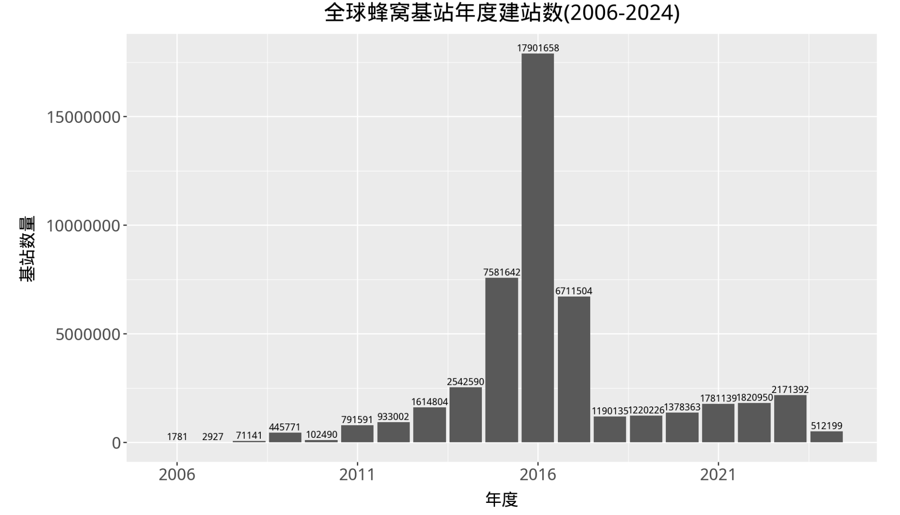

一、数据集介绍
数据名称: 全球蜂窝基站数据集
数据格式: csv
记录数量: 46280562
覆盖年度: 2006 ~ 2024
使用方法: 可探索全球基站位置的分布与特征，分析网络覆盖模式，并调查基站更新的时间趋势。
数据来源: OpenCelliD
1.1 获取
500元；如需购买，请加微信 372335839， 备注「姓名-学校-专业」
1.2 所含字段
- Radio：宽带蜂窝网络技术的代际（例如，LTE，GSM）。
- MCC：移动国家代码，是每个国家在移动网络中的唯一标识符。
- MNC：移动网络代码，在一个国家内识别移动网络。
- LAC：位置区域代码、跟踪区域代码或网络标识符。
- CID：每个基站收发器（BTS）或扇区的唯一标识符。
- Longitude：指定东西方向位置的地理坐标。
- Latitude：指定南北方向位置的地理坐标。
- Range：大约的覆盖范围，表示基站覆盖延伸的区域（以米为单位）。
- Samples：为了导出该数据点而处理的测量数量。
- Changeable：指示基站位置是否通过样本处理确定（1），或是直接从电信公司获取（0）。
- Created：表示基站首次添加到数据库的时间戳（UNIX格式）。
- Updated：表示基站最后被观察或更新到数据库的时间戳（UNIX格式）。
- AverageSignal：表示基站位置的平均信号强度。
- Country：基站所在的国家(或地区)。
- Network：拥有基站的公司。
- Continent：基站所在的大陆。
二、查看数据
2.1 读取数据
import pandas as pd
df = pd.read_csv('全球蜂窝基站(更新至2024-05).csv.gz', compression='gzip')
#或将gz文件解压得到csv文件，再读取
#df = pd.read_csv('全球蜂窝基站(更新至2024-05).csv', compression='gzip')
df['created'] = pd.to_datetime(df.created)
df['updated'] = pd.to_datetime(df.updated)
df
2.2 各大陆蜂窝基站数量
df.Continent.value_counts()
Run
Continent
Europe 17119424
Asia 13375989
North America 9541565
South America 3150035
Africa 2346316
Oceania 747233
Name: count, dtype: int64
2.3 覆盖时间
print('基站设立时间: ', df['created'].min(), '~', df['created'].max())
print('基站更新时间: ', df['updated'].min(), '~', df['updated'].max())
Run
基站设立时间范围: 1970-01-01 00:00:00 ~ 2024-05-09 23:57:18
基站更新时间范围: 1970-01-01 18:33:27 ~ 2024-05-09 23:59:02
注意: 时间范围虽然很广，但1970~2006之间是极其稀疏的， 绝大多数记录是落在2006-2024。
2.4 筛选指定国家(地区)
将中国的基站数据筛选&保存到新文件中。
#筛选含中国的站点数据
china_df = df[df.Country.str.contains('China')]
#保存
china_df.to_csv('中国手机蜂窝基站数据.csv.gz', index=False, compression='gzip')
china_df
三、可视化
3.1 全球年度建站
from plotnine import *
import matplotlib.pyplot as plt
from matplotlib.font_manager import FontProperties
#文泉驿微米黑.ttf位于代码同文件夹
font_prop = FontProperties(fname='文泉驿微米黑.ttf')
years = []
volumes = []
df2 = df.copy(deep=True)
df2.set_index('created', inplace=True)
for date, y_df in df2.groupby(pd.Grouper(freq='YE')):
if date.year>=2006:
years.append(date.year)
volumes.append(len(y_df))
data = pd.DataFrame({'year': years,
'volume': volumes})
(
ggplot(data, aes(x='year', y='volume'))
+geom_bar(stat='identity')
+labs(title='全球蜂窝基站年度建站数(2006-2024)',
x = '年度',
y = '基站数量')
+geom_text(aes(label='volume'), # 添加数据标签
va='bottom', # 垂直对齐方式为底部（即在柱子顶部）
size=8, # 设置字体大小
format_string='{}') # 格式化字符串
+theme(figure_size=(10, 6),
text = element_text(family = font_prop.get_name(), size=14),
plot_title = element_text(family = font_prop.get_name(), size=18)
)
+scale_x_continuous(breaks=range(2006, 2025, 5))
)

3.2 中国年度建站
from plotnine import *
import matplotlib.pyplot as plt
from matplotlib.font_manager import FontProperties
#文泉驿微米黑.ttf位于代码同文件夹
font_prop = FontProperties(fname='文泉驿微米黑.ttf')
years = []
volumes = []
#筛选中国
china_df = df[df.Country.str.contains('China')]
china_df.set_index('updated', inplace=True)
for date, y_df in china_df.groupby(pd.Grouper(freq='YE')):
if date.year>=2006:
years.append(date.year)
volumes.append(len(y_df))
data = pd.DataFrame({'year': years,
'volume': volumes})
(
ggplot(data, aes(x='year', y='volume'))
+geom_bar(stat='identity')
+labs(title='中国蜂窝基站年度建站数（2006-2024）',
x = '年度',
y = '基站数量')
+geom_text(aes(label='volume'), # 添加数据标签
va='bottom', # 垂直对齐方式为底部（即在柱子顶部）
size=8, # 设置字体大小
format_string='{}') # 格式化字符串
+theme(figure_size=(10, 6),
text = element_text(family = font_prop.get_name(), size=14),
plot_title = element_text(family = font_prop.get_name(), size=18)
)
+scale_x_continuous(breaks=range(2006, 2025, 5))
)

四、声明
500元；如需购买，请加微信 372335839， 备注「姓名-学校-专业」